TRANSFER ASSEMBLY > DISASSEMBLY |
| 1. REMOVE PROPELLER SHAFT HEAT INSULATOR BRACKET SUB-ASSEMBLY |
 |
Remove the bolt and bracket.
| 2. REMOVE TRANSFER OIL PUMP PLATE |
 |
Remove the 4 bolts, oil pump plate and oil pump driven rotor.
Remove the O-ring from the oil pump plate.
 |
Remove the transfer oil seal ring from the input shaft.
 |
Remove the oil pump drive rotor from the input shaft.
| 3. REMOVE TRANSFER CASE STRAIGHT PIN |
 |
Remove the 2 straight pins.
| 4. REMOVE TRANSFER CASE PLUG |
 |
Using a 10 mm hexagon wrench, remove the case plug, compression spring, ball and relief valve seat.
| 5. REMOVE TRANSFER OIL PUMP PLATE OIL SEAL |
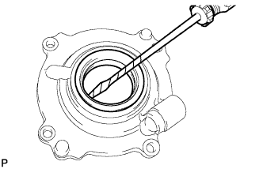 |
Using a screwdriver, pry out the oil seal from the oil pump plate.
| 6. REMOVE FRONT OUTPUT SHAFT COMPANION FLANGE SUB-ASSEMBLY |
 |
Using SST and a hammer, release the staked part of the nut.
 |
Using SST to hold the companion flange, remove the lock nut.
 |
Using SST, remove the companion flange.
Remove the O-ring from the companion flange.
| 7. REMOVE TRANSFER CASE FRONT OIL SEAL |
 |
Using SST, tap out the oil seal.
| 8. REMOVE REAR OUTPUT SHAFT COMPANION FLANGE SUB-ASSEMBLY |
 |
Using SST and a hammer, release the staked part of the nut.
 |
Using SST to hold the companion flange, remove the lock nut.
 |
Using SST, remove the companion flange.
Remove the O-ring from the companion flange.
| 9. REMOVE TRANSFER CASE REAR OIL SEAL |
 |
Using SST, tap out the oil seal.
| 10. REMOVE NO. 1 TRANSFER CASE PLUG |
 |
Remove the plug, compression spring and pin.
| 11. REMOVE TRANSFER CASE PLUG |
 |
Using a 6 mm hexagon wrench, remove the plug.
| 12. REMOVE REAR TRANSFER CASE ASSEMBLY |
 |
Remove the 14 bolts.
Remove the rear transfer case.
| 13. REMOVE FRONT TRANSFER OUTPUT SHAFT NEEDLE ROLLER BEARING |
 |
Remove the needle roller bearing and spacer from the output shaft.
| 14. REMOVE NO. 2 TRANSFER GEAR SHIFT FORK |
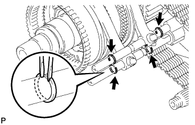 |
Using 2 screwdrivers and a hammer, tap out the 4 shift fork shaft snap rings.
 |
Remove the bolt. Then remove the No. 2 gear shift fork together with the high and low clutch sleeve from the shift actuator.
| 15. REMOVE TRANSFER SHIFT ACTUATOR ASSEMBLY |
 |
Remove the No. 1 gear shift fork bolt.
 |
Remove the 3 bolts.
 |
Remove the shift actuator, No. 1 gear shift fork, washer, and straight pin from the rear transfer case.
 |
Remove the O-ring from the shift actuator.
| 16. REMOVE REAR TRANSFER OUTPUT SHAFT ASSEMBLY |
 |
Using a snap ring expander, expand the snap ring as shown in the illustration.
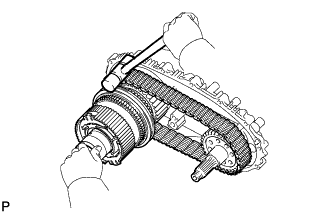 |
Using a plastic-faced hammer, carefully tap the rear transfer case, and remove the output shaft together with the drive chain and driven sprocket.
Remove the output shaft and driven sprocket from the drive chain.
 |
Using a snap ring expander, remove the snap ring from the rear transfer case.
| 17. REMOVE FRONT DRIVE CLUTCH SLEEVE |
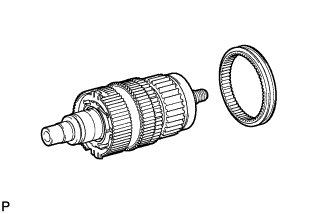 |
Remove the clutch sleeve from the output shaft.
| 18. REMOVE SIDE GEAR SHAFT HOLDER BEARING |
 |
Using a screwdriver, remove the snap ring.
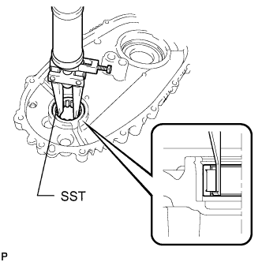 |
Using SST, remove the bearing.
| 19. REMOVE TRANSFER OIL SEPARATOR SUB-ASSEMBLY |
 |
Remove the 3 bolts and oil separator.
Remove the O-ring from the oil separator.
| 20. REMOVE TRANSFER CASE MAGNET |
 |
Remove the magnet from the oil separator.
| 21. REMOVE TRANSFER INPUT SHAFT ASSEMBLY |
 |
Using a 14 mm hexagon wrench, remove the 2 case plugs from the front transfer case.
 |
Using a snap ring expander, expand the snap ring as shown in the illustration. Then remove the input shaft from the front transfer case.
| 22. REMOVE TRANSFER LOW PLANETARY RING GEAR |
 |
Using a screwdriver, remove the snap ring. Then remove the low planetary ring gear from the front transfer case.
 |
Using a snap ring expander, remove the snap ring from the front transfer case.
| 23. REMOVE TRANSFER DRIVEN SPROCKET BEARING |
 |
Using a screwdriver, remove the snap ring. Then remove the bearing from the front transfer case.
| 24. REMOVE NO. 1 SYNCHRONIZER RING |
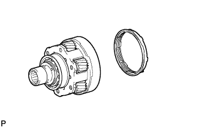 |
Remove the synchronizer ring from the input shaft.
| 25. REMOVE NO. 1 TRANSFER INPUT SHAFT SEAL RING |
 |
Remove the seal ring from the input shaft.
| 26. REMOVE TRANSFER INPUT SHAFT BEARING |
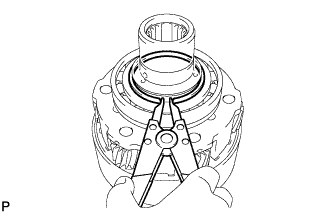 |
Using a snap ring expander, remove the snap ring.
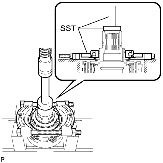 |
Using SST and a press, press out the bearing.
| 27. REMOVE TRANSFER INPUT SHAFT BIMETAL FORMED BUSH |
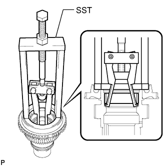 |
Using SST, remove the bush.
| 28. REMOVE TRANSFER INPUT SHAFT PLUG |
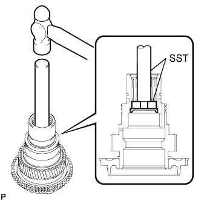 |
Using SST and a hammer, tap out the input shaft plug.
| 29. REMOVE TRANSFER OUTPUT SHAFT WASHER |
 |
Remove the 2 output shaft washers from the output shaft.
| 30. REMOVE NO. 1 TRANSFER OUTPUT SHAFT SPACER |
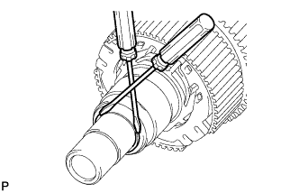 |
Using 2 screwdrivers and a hammer, tap out the snap ring.
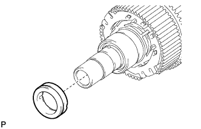 |
Remove the output shaft spacer from the output shaft.
 |
Remove the seal ring from the output shaft spacer.
 |
Remove the straight pin from the output shaft.
| 31. REMOVE CENTER DIFFERENTIAL CASE |
 |
Remove the center differential case from the output shaft.
 |
Using a snap ring expander, remove the snap ring.
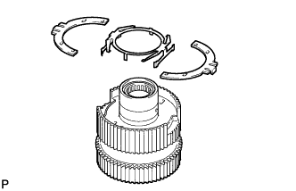 |
Remove the synchromesh shifting key spring and No. 2 synchromesh shifting keys from the center differential case.
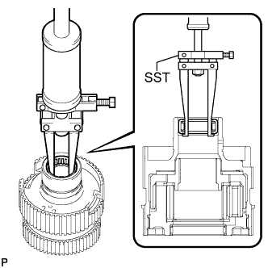 |
Using SST, remove the needle roller bearing.
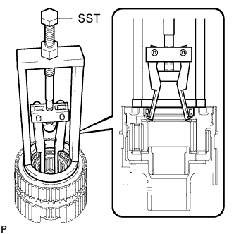 |
Using SST, remove the needle roller bearing.
| 32. REMOVE TRANSFER OUTPUT SHAFT SPACER |
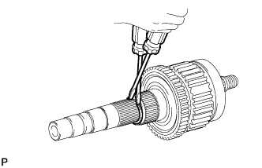 |
Using 2 screwdrivers and a hammer, tap out the snap ring.
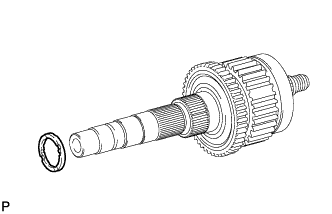 |
Remove the output shaft spacer from the output shaft.
 |
Remove the straight pin from the output shaft.
| 33. REMOVE TRANSFER DRIVE SPROCKET SUB-ASSEMBLY |
 |
Remove the drive sprocket from the output shaft.
| 34. REMOVE TRANSFER DRIVE SPROCKET BEARING |
 |
Remove the bearing from the output shaft.
| 35. REMOVE REAR TRANSFER OUTPUT SHAFT |
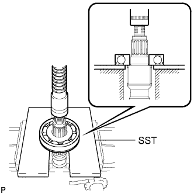 |
Using SST and a press, press out the bearing.
 |
Remove the needle roller bearing from the output shaft.